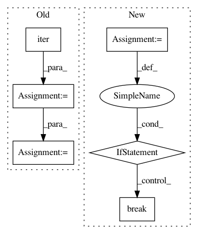

22ccf4365af620d10387b207aa103287c34d9247,benchmarks/benchmarks/model_speed/bench_pinsage.py,,track_time,#Any#,363
Before Change
batch_size=batch_size,
collate_fn=collator.collate_test,
num_workers=num_workers)
dataloader_it = iter(dataloader)
// Model
model = PinSAGEModel(g, item_ntype, textset, hidden_dims, num_layers).to(device)
// Optimizer
opt = torch.optim.Adam(model.parameters(), lr=lr)
model.train()
for batch_id in range(batches_per_epoch):
pos_graph, neg_graph, blocks = next(dataloader_it)
// Copy to GPU
for i in range(len(blocks)):
blocks[i] = blocks[i].to(device)
pos_graph = pos_graph.to(device)
After Change
opt = torch.optim.Adam(model.parameters(), lr=lr)
model.train()
for batch_id, (pos_graph, neg_graph, blocks) in enumerate(dataloader):
// Copy to GPU
for i in range(len(blocks)):
blocks[i] = blocks[i].to(device)
pos_graph = pos_graph.to(device)
neg_graph = neg_graph.to(device)
loss = model(pos_graph, neg_graph, blocks).mean()
opt.zero_grad()
loss.backward()
opt.step()
if batch_id >= 3:
break
print("start training...")
t0 = time.time()
// For each batch of head-tail-negative triplets...
for batch_id, (pos_graph, neg_graph, blocks) in enumerate(dataloader):
In pattern: SUPERPATTERN
Frequency: 3
Non-data size: 6
Instances
Project Name: dmlc/dgl
Commit Name: 22ccf4365af620d10387b207aa103287c34d9247
Time: 2021-02-08
Author: wmjlyjemaine@gmail.com
File Name: benchmarks/benchmarks/model_speed/bench_pinsage.py
Class Name:
Method Name: track_time
Project Name: sony/nnabla-examples
Commit Name: dd1740d3f5a6e587805551e7316b0e607dc1f6f4
Time: 2020-02-29
Author: sai.dyavarasetti@sony.com
File Name: object-detection/yolov2/valid.py
Class Name:
Method Name: valid
Project Name: GoogleCloudPlatform/python-docs-samples
Commit Name: 7d47747b0515a1f0c4b3ae7bc999b072c132864a
Time: 2020-06-15
Author: erschmid@google.com
File Name: media-translation/cloud-client/translate_from_mic.py
Class Name:
Method Name: main